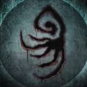

Game Progress Route for Bloodborne is a guide for players to find a recommended path to complete the game. If you are new to souls games, we recommend reading the New Player Help and Combat pages so that you can understand the game's mechanics better. Further Guides are available here.
Game Progress Route for Bloodborne
1st Floor Sickroom
- Progress to Central Yharnam
Optional Steps:
- Die to first enemy or find the Lamp and enter Hunter's Dream
- Kill first enemy with visceral attack.
Hunter's Dream
- Use tombstone to warp back to 1st Floor Sickroom or if you ran past the Wolf Beast warp to Central Yharnam
Optional Steps:
- Find Gilbert and begin his quest line
- Meet Eileen the Crow atop the sewers
- Find Viola's Daughter and get the Tiny Music Box
Great Bridge (Optional)
Optional Steps:
- Defeat Cleric Beast
- Just encountering this boss will give you 1 Insight, which is enough to buy a Small Resonant Bell from the upper Messenger's shop.
- After defeating the Cleric Beast, you will be able to buy the Kirkhammer and the Repeating Pistol in the shop.
Cathedral Ward
Two options for how to proceed.
- Progress to Old Yharnam
- Purchase the Hunter Chief Emblem from the Lower Bath Messengers for 10,000 Blood Echoes and proceed to boss Vicar Amelia. If you chose to go to Old Yharnam you do not need to purchase the emblem. Note: If you do not purchase the emblem and therefore do not unlock the cathedral ward gate to the circular area using the emblem, you will not be able to summon any help for the fight with Vicar Amelia.
- You may enter The Old Hunters after you have defeated Amelia.
Optional Steps:
- Talk to Eileen the Crow just outside the front door to the left (only after unlocking the shortcut with the Hunter Chief Emblem, including the shortcut leading to the Cathedral Ward lamp), then head back to the Tomb of Oedon (you can't awaken there, you have to walk back), once there you will be confronted by Henryk, a blood mad hunter. Help Eileen defeat him (but avoid hitting her too much, as this will cause her to aggro).
- Talk to the Oedon Chapel Dweller near the Cathedral Ward lamp
- Meet Alfred
- Return to Gilbert and receive Flamesprayer
- Return to the Lonely Old Woman and direct her to the Cathedral Ward (you must first talk to the Oedon Chapel Dweller near the Cathedral Ward lamp).
- Return to Viola and either give her the Red Jeweled Brooch or send her to the Cathedral Ward(She won't actually show up, but the story arc will continue.)
- Obtain the Monocular
- Defeat Vicar Amelia
- Proceed to Old Yharnam
Old Yharnam
This area and boss are entirely optional; however, they are highly recommended for the items and content they unlock.
- Enter from the Cathedral Ward, evade Djura's Gatling gun, and continue through to the boss. Killing Djura now will get you the Powder Keg Hunter Badge; however, if you wait until later, you can obtain a gesture in addition to the badge.
- Defeating Blood-Starved Beast will open the way to the Healing Church Workshop, thereby getting to Vicar Amelia without buying the Hunter Chief Emblem. However, doing so will not enable any summoning for the fight until the Cathedral Ward gate is unlocked with the emblem or by activating the lever on the opposite side of the gate.
- OPTIONAL (Step 12): In order to get both the gesture and the badge from Djura, enter Darkbeast Paarl arena (you do not need to defeat him in order to approach Djura) in Hypogean Gaol (you cannot access this area until after defeating the Blood-Starved Beast and then get killed by a Snatcher) and open the shortcut to Old Yharnam. From Blood-Starved Beast lamp or Darkbeast Paarl lamp, approach Djura without aggroing him or atttacking any monsters and answer "spare the Beasts". This will grant the gesture, the badge, and he will be friendly. Feel free to kill him after this for access to the Ashen Hunter Set.
Optional Steps:
- Defeat Blood-Starved Beast and receive Pthumeru Chalice
- Get killed by a Snatcher, decide whether to defeat Darkbeast Paarl, then talk to Djura (details to the left).
Healing Church Workshop (Optional)
Optional area if you went to Old Yharnam and defeated Blood-Starved Beast.
- The previously closed door near the Cathedral Ward lamp will now be open.
- Fall down the rafters to the bottom to access the shortcut back to Cathedral Ward so you don't have to buy the Hunter Chief Emblem.
Cathedral Ward Revisited
Get here and defeat Vicar Amelia to get the password for the Forbidden Woods by touching the altar behind the boss arena. You can receive the Tonsil Stone from 4 different NPCs with red lanterns once you open the door to the Forbidden Woods.
- The suggested ones are either in Healing Church Workshop or Forbidden Woods.
Optional Steps:
- Obtain the Black Church Set
- Once you have beaten 3 bosses find Arianna and direct her to the Cathedral Ward. This is important for getting One Third of Umbilical Cord later.
- After telling Arianna to go to the Cathedral Ward tell the Skeptical Man to go to Iosefka's Clinic (you must first talk to Iosefka). He actually goes there if you tell him to head for Oedon Chapel.
Hemwick Charnel Lane
Optional area. To get here you must go left of the Grand Cathedral when facing the front of the cathedral from the outside.
Hypogean Gaol
- Optional area. To get here you must face one of the Snatcherenemies and let it kill you without it enraging, just let it attack and kill you without hitting it. It will look like you die but a cutscene will play and you will lose your Blood Echoes. You will have to pick them up where you died.
- This is a good place to farm Blood Echoes, Blood Stone Shards, and Twin Blood Stone Shards by killing the 2 Snatchers and the 2 Giant Boars outside. Nets around 12,000 Blood Echoes per run.
- Go into boss room where the Darkbeast Paarl is, and either defeat it or let it kill you (if you kill it, proceed to unlock the shortcut to Old Yharnam). As soon as you reach the shortcut ladder leading to where Djura is, DO NOT run, roll, OR sprint. Casually climb up the next two ladders and WALK towards him to talk to Djura and receive both the badge and the gesture.
Optional Steps:
- Obtain Tonitrus weapon
- Defeat Darkbeast Paarl
- If you send Adella the Nun to the Cathedral Ward, refrain from accepting blood from Arianna afterward if you want the "good" ending.
- Obtain badge and gesture from Djura.
Lecture Building 1st Floor (Optional)
Optional area. To get here you must have the Tonsil Stone in your inventory and get picked up by the invisible Lesser Amygdala that is at the dead end to the right of the Grand Cathedral when facing the front of the cathedral from the outside. You will actually have immediate access to this area upon defeating Rom, the Vacuous Spider.
Nightmare Frontier (Optional)
Optional area. Leave the lecture building through the large doors at the end of the hall. Can be quite difficult right now, suggested to return later. Beware of the poison water.
Optional Steps:
- Take hidden path to rear entrance of Iosefka's Clinic
- Find the Suspicious Beggar and kill him, do NOT send him to safety (see his page for strategies)
Iosefka's Clinic (Rear Entrance)
Optional Area.
NOTE: If you intend to use Iosefka as a source for one of the One Third of Umbilical Cord, do NOT kill her now. Return here after killing Rom, The Vacuous Spider in order to get One Third of Umbilical Cord. The catch here is that killing her now would let you obtain a rune. This makes her the best candidate to sacrifice, since the other three cord sources don't require you to give up anything. The choice is yours.
Castle Cainhurst
Optional Area. To get here you must have the Cainhurst Summons in your inventory and approach the large obelisk in the graveyard near the Witch's Abode, there are two executioners in the graveyard. The Witch boss must be defeated for this to work.
Area can be quite difficult.
Optional Steps:
- Defeat Martyr Logarius
- Gain access to Cainhurst Vilebloods Covenant.
- Complete Alfred's quest line.
Byrgenwerth
Find the Lunarium Key and defeat Rom, The Vacuous Spider
NOTE: This will permanently change the game world.
- Hypogean Gaol lamp will no longer work; however, there are shortcuts into here from Yahar'gul, Unseen Village
- Any NPCs that can be "saved" (ask you about a safe place) and have not been saved will be lost. Make sure Arianna is saved to get One Third of Umbilical Cord.
- Amygdalas will become visible.
- Many Hunter NPCs quest lines can be completed now such as Eileen the Crow, which she will be found at the top of the steps leading to the Grand Cathedral.
- Iosefka can no longer be fought to obtain the Oedon Writhe rune. After killing Rom, she will then provide One Third of Umbilical Cord instead.
Yahar'gul, Unseen Village
- The Upper Cathedral Key can be found in the building where the laser-shooting Amygdala is located.
- Defeat One Reborn
- Inspect the Mummy after One Reborn to gain access to Lecture Building 2nd Floor.
Optional Steps:
- If you did not defeat Darkbeast Paarl in Hypogean Gaol you can defeat him here.
- Obtain Tonitrus weapon (if you didn't during your first optional visit here)
- Obtain bloodgem that adds +18% Physical ATK.
Orphanage
Optional area.
- Defeat Celestial Emissary
to gain access to Lumenflower Gardens - Defeat Ebrietas, Daughter of Cosmos
Nightmare of Mensis
- Defeat Micolash, Host of the Nightmare
- Defeat Mergo's Wet Nurse and receive One Third of Umbilical Cord
Optional Steps:
- Pull lever and drop the Brain of Mensis
- Obtain Blood Rock
- Obtain tier 3 Moon Caryll Rune
- Kill Brain of Mensis
and obtain the Living String
SPOILERS BELOW |
End Game - Hunter's Dream
There are three endings and how you proceed will decide which ending you get.
NOTE: Once you trigger the end game boss(es) you can not continue in the open world so finish everything you want to before triggering the end.
- Ending one - Consume no more than 2 One Third of Umbilical Cord and then talk to Gehrman. Let him kill you, no final boss.
- Ending two - Consume no more than 2 One Third of Umbilical Cord and then talk to Gehrman. Fight him as final boss.
- Ending three - Collect and consume 3 or more One Third of Umbilical Cord and then talk to Gehrman. Fight him as the penultimate boss before the Moon Presence - the true final boss.
Optional Steps:
- Complete Arianna's quest line to receive One Third of Umbilical Cord
- Complete Iosefka's quest line to receive One Third of Umbilical Cord.
Game Progression Route for The Old Hunters (DLC)
The Hunter's Nightmare
- Defeat Ludwig, The Holy Blade
- Obtain the Eye Pendant to activate the altar lift
Optional Steps:
- Obtain Laurence's Skull
- Defeat Laurence, the First Vicar
Research Hall
- Obtain and feed 3x Brain Fluid to Saint Adeline for the following, in order:
- Obtain Blood of Adeline
- Obtain more Blood of Adeline + Balcony Key
- Obtain Blood of Adeline + Milkweed (Optional)
- Defeat Living Failures for the Astral Clocktower Key
- Defeat Lady Maria of the Astral Clocktower
Optional Steps:
- Obtain Underground Cell Key
Fishing Hamlet
- Defeat Orphan of Kos
Optional Steps:
- Obtain Underground Cell Inner Chamber Key (Via the Harrowed Hunter Quest completion or as a drop)
 Anonymous
AnonymousAh so its just like Dark Souls game cycle where after you kill Gwyn it automatically move to ng+ I see.....
This lists the lecture building before the point where you can get the item needed to access it. I was using this as a reference but now I'm confused. This guide seems to contradict itself. It's OK though. It's free. I'll live. Bloodborne yeah!
- Anonymous
This is wrong: Note: "If you do not purchase the emblem and therefore do not unlock the cathedral ward gate to the circular area using the emblem, you will not be able to summon any help for the fight with Vicar Amelia."
Just open the gate from the other side.
- Anonymous
- Anonymous
This game is way too short. Thought i was maybe halfway at yaharghul. This sucks. Too easy too. I got this far and the biggest challenge was blood starved beast. I grinded hard for nothing. So much for being harder than dark souls...
- Anonymous
Hi, just revisiting the game and thought I'd check this page, make sure I've not missed anything so far.
"Cathedral Ward...
Note: If you do not purchase the emblem and therefore do not unlock the cathedral ward gate to the circular area using the emblem, you will not be able to summon any help for the fight with Vicar Amelia."
This is not true; I just did it like two hours ago and Henriett was available.
- Anonymous
There is never something optional in a From Software game for me. I just have to do everthing.
- Anonymous
Hello fellow Bloodborners lol , I'm wondering i have 3 Umbillical Cords so i want that Secret Moon Presence fight... However , is it possible just to Kill Gerhman and take his Badge while Bold Marking outside , and after that will the World still be open ? Like all the Lamp locations ( I dont want to rush into NG+ , i'd like to complete Chalice Dungeons but only after killing Gerhman without killing Moon Presence ). Is that Possible ? Or the Open-World aspect of the game will be closed during after Gerhman's death ? Just wondering here
- Anonymous
What is this are you kidding me you made whole guide that needed time more than the game itself lol. Why made the game with no consecutive, player doesn’t know where to go next or how to go to the other places. I played more than have the game and yet not seen the story of the game just killing monsters. This is the worst game I had ever.
- Anonymous
- Anonymous
- Anonymous
No warning that New Game Plus starts automatically after the final boss you should correct that.
- Anonymous
that github progression checklist doesn't say you need to do eileen's quest where you fight beside her so i ended up missing it and she despawned....
- Anonymous
I can't save at hypogean gaol for the first time. Its only show okay. Why? Can u assist me?
- Anonymous
If you follow this order, you most likely won’t get to the 3rd ending because whoever made it is an idiot.
- Anonymous
Is it just me or is this order out of whack? You can't get to the lecture hall before going to fobidden woods to get the tonsil stone
- Anonymous
I really appreciate that even though it says spoilers below in regards to the endings, it doesn't actually spoil the ending, it just details how to get them.
- Anonymous
Is it just me or is bb the easiest game by from software so far? I nearly defeated every boss on the first try...
- Anonymous
the chalices are the worst thing ever invented by from software... they are so boring but nessecary because of the *****ing gems... last playthrough they were the reason i stopped playing... this run i think i will ignore them completely! Any tips so far how to rush through them without losing fun while playing but collect all nessecary items?
- Anonymous
Winter Lanterns can be patched out of the game and I’d die happy.
- Anonymous
I tried to rush only key bosses in ng 4 and the game finished under 1 hour. So i suggest go for optional areas for more fun and items and Ofc more challenge
- Anonymous
Can I beat the game without going into the optional areas? Just curious.
- Anonymous
If you choose to submit your life, it doesn't matter how many Cords you have consumed. I consumed all four and still got the first ending.
- Anonymous
Optional Area Optional Area Optional Area Optional Area Optional Area Optional Area Optional Area Optional Area Optional Area Optional Area Optional Area Optional Area Optional Area Optional Area Optional Area Optional Area Optional Area Optional Area Optional Area Optional Area
- Anonymous
Let me know if I jump into the dlc before fighting ROM will I come back and continue on the story I want the amazing weapons inside the dlc before carrying on ,is this possible
- Anonymous
What i the farthest I can be and still fight the final bosses but still not go to NG+
- Anonymous
Anyone remember when guides used to actually be guides instead of a mess of jumbled words and videos...?
- Anonymous
Yahargul :
"Obtain bloodgem that adds +18% Physical ATK"
Where? I can't see it in the walkthrough...
- Anonymous
I truely thank the people who created this guide ..
It's just what I was looking for ..❤
- Anonymous
Transposed a letter in Flamesprayer (spelled it as flamepsrayer) and because of that it links to a dead page. I can't change it since I'm not registered.
- Anonymous
This was extremely helpful. A thank you to the people who made this guide.
- Anonymous
For the listing for Lecture Building 1st Floor, it says "Obtain multiple runes." The problem is that there are no runes on the first floor.
- Anonymous
- Anonymous
You should progress Forbidden Woods before Nightmare Frontier and Hypogean Gaol. That'll have your weapon +6.
- Anonymous
they should add that you can obtain A Call Beyond in the orphanage
- Anonymous
Is there any where to find a similar guide for The Old Hunters? If not I'd like to request adding it to this page.
- Anonymous
im confused, i couldnt find Gilbert in central yarnam, where em i going wrong? step 3.
- Wolfyre
Fun Fact!
The Cleric Beast or the Blood Starved Beast are not, both, optional. You have to kill one of them to access the closed areas of Cathedral Ward or there is no possible way to progress the game. Killing the Cleric Beast gives you access to the Hunter Chief's Emblem to open the gate or you have to open the door inside the Chapel by killing the Blood Starved Beast to come up through the lower levels into the back way to open the gates.
- Anonymous
"If you do not purchase the emblem and therefore do not unlock the cathedral ward gate to the circular area with the emblem, you will not be able to summon any help for the fight with Vicar Amelia."
This is not true...
I did not buy the emblem (opened the gate from the other side instead) and I could still summon Henriett (the Old Hunter NPC). I had to open the three gates in that area before her summon sign would appear though.
- Anonymous
Hey guys, I just discovered this page and the game Bloodborne, I'm having a ton of fun with this game but atm I don't know how to progress and I find the progression page pretty confusing. Can somebody help me? I have defeated: Cleric Beast, Blood Starved Beast, Father Gascoine, Vicar Amelia, Witch of Hemwick, Shadow of Yharnam and Darkbeast Paarl. My open paths are currently Byrgenwerth (struggling to defeat the hunter in the house), also I've opened the Lecture Building and Nightmare Frontier in which I'm struggling.
- Anonymous
Why is it that i Can't trigger the buggy? I killed the witches, got summons, and went to oblisk. Nothing. I'm on NG+ and killed mergo's wet nurse.
- Anonymous
You should at least put in a note that Alfred's summon disappears from the blood-starved beast if you kill Amelia or put Old Yharnam before Cathedral Ward.
- Anonymous
Hi, I made the progression map actually readable. http://i.imgur.com/ZgfKiNr.jpg
- Anonymous
- Anonymous
You don't need to kill the Blood Starved Beast to enter the Grand Cathedral. I killed Vicar Amelia before killing the Blood Starved Beast. It's actually an Optional Boss.
- Anonymous
You can actually enter Nightmare Frontier before killing Rom. The difficulty is also way too easy at the point you're listing it tbh (compared to the other areas around that time)
- Anonymous
To meet Djura without aggroing him, you actually need to kill Blood-starved Beast and then Darkbeast Paarl. While visiting old Yharnam you should avoid any contact(dont deal damage and dont climb up to the tower) to the hunters there. Only AFTER THAT you can visit him, and probably you don't even need black church set of armour.
- Anonymous
Okay so ive been up and over about majority of bloodbornes locations, took me a while to find out about cainburst, but now my next stump is finding out where this nightmare of mensis is? Does anyone know how to go there? If its in nightmare frontier i must be blind
- Anonymous
Fastest way to beat the game without exploits or glitches, only killing the bosses you have too. 1. Father Gascoigne 2. Vicar Amelia 3. The Shadow of Yharnam 4. Rom, The Vacuous Spider 5. The One Reborn 6. Micolash, Host of The Nightmare 7. Mergo's Wet Nurse Finshed Optional Final Bosses at End Game. 8. Gehrman, The First Hunter 9. Moon Presence (If the requirements are met the fight will start after beating Gehrman.
- Anonymous
The clinic should not be put before the boss fight against Rom, because if you go before fighting Rom you lose a third of umbilical cord that won't drop from the owner of the clinic....
- Anonymous
I don't understand 7 you can't get snatchers to appear before you kill the blood stained beast. How do you get to that 2nd entrance?
- Anonymous
- Anonymous
Just defeated dark beast with my friend. We are completely stumped and have no idea where to go. Where do we go?
- Anonymous
the first last boss is located at the hunters dream world, where u start the game. There is that gate that was closed up until you kill the wet nurse.
- Anonymous
On ng+1, if you take the death shortcut to Hypogeann Gaol, your echoes (at least when I just did it) drop on the ground or get absorbed by the guy you let kill you.
OK, I think I finished editing this page,
Added the optional column and cleaned up the page from the mess it was before
Checked all the links and made sure they go to real pages
Fixed all the weird formatting issues like pound signs/hashtags instead of numbers
Fixed the weird line breaks before and after some page links
Addressed the two issues reported to far and responded to the comments saying so
Made sure the page renders right in Firefox and Chrome
- Anonymous
How do you guys define what is good/decent/bad ending ? All three has little differences, but the one that shows our hunter in a wheelchair is slightly better then the others, in my opinion. Just name them easy/normal/hard. Or, .. I don't know. The point is, there's no "good" ending.
- Anonymous
Where is this rune that raises your phys attack 18%?? I see no mention of it on the Yahar'gul or Hypoean Gaol pages.
- Anonymous
So if consuming them is what you're supposed to do then does that mean that I am not screwed becaearlier I consumed the first one because I didn't know what they did
- Anonymous
"For beginners it is suggested to come from the Cathedral Ward, evade Djura's gatling gun, and defeat him. This will prevent him from becoming friendly later and teaching a gesture but you also get access to the Powder Keg Hunter Badge now instead of later." This is completely inaccurate. You can run through from Cathedral Ward, and you could even attack Djura without killing him, and it is still possible to befriend him. You have to have killed Darkbeast Paarl and approach from that checkpoint without attacking any mobs. This will allow you to speak with Djura. What you are wearing is also irrelevant, contrary to some beliefs.
- Anonymous
As someone who's already beaten the game, I really like this guide. Makes my second character progress a lot faster. And to Taux who made the map: Wouldn't you say the line from Iosefka's Clinic should go to Forbidden Woods instead of Forbidden Grave? As you'll only get the Forbidden Grave lamp after defeating the boss there, which you don't need to, to go to Iosefka's Clinic. And aren't there any named areas between the two anyway? I would also think the fastest way to Iosefka's Clinic was from the Forbidden Woods lamp. Anyway, this is nitpicking. The map is great either way.
- Anonymous
Seems healing church should be on that map before old workshop.
- Anonymous
Guys, if you, like me, sent him to the chapel, he can be found outside but can still be killed and drops a "beast" rune. It's quite easy to do here, as he can't enter the chapel itself, so just lure him to attack you, run inside/roll inside, and get your hits in!
- Anonymous
I have just lost to Gehrman and was able to go back to Old Bridge to farm some Blood Echos. Did not try other areas. Please confirm.
- Anonymous
I simply can't understand why castle cainhurst is listed before byrgenwerth. The castle is much harder.
- Anonymous
Does anyone know how to get the great ihyll chalice ? Would help me a lot...
- Anonymous
Is it me or does the list miss out some places? Advent Plaza, Iogarius Seat, Moonside Lake and a couple more? I mean its in the Image but no mention of it on the list
- Anonymous
This is a great guide, but it would be nice if it was a little more thorough. The only reason I continued on Eileen's questline was because Henryk's set was recommended for Paarl, I would've had no idea otherwise.
- Anonymous
Would it be great if all the weapons and hunter tools be added here. So it can also help 100% completion. Just the normal versions.
- Anonymous
This page seriously needs to be open to edit, the DLC should be added in, and the route should be altered in at least numerical sequence to indicate interchangeable areas in terms of equal difficulty at their respective point in the game with other areas. There can also be other key featured added to the optional steps portion.
- Anonymous
if you die at the moon presence, you can continue in the open world and with the gehrman unlock to buy his stuff at the messengers. But the last part of the game progress route states otherwise. Am i missing something? I am thinking this is the ultimate and last save point before new game plus?
- Anonymous
If you consume 3+ umbilical cords is it still possible to let Gherman kill you and get ending one?
- Anonymous
What can I do if I killed oedon chapel dweller on mistake how can I still finish the side quest or did I file the quest some can tall me plz
- Anonymous
Does anyone know I get locked out of the rest of the game including the DLC if I kill Mergo's Wet Nurse, or will I have to leave Mergo's Wet Nurse untill im ready for final bosses and NG+ In advance thanks
This page does exactly what it was intended to do. It doesn’t say “100% guide” it’s just a potential progression route. If you want to find everything go somewhere that claims to do so. This page is more than enough. Thank you writers.
10
+10
-1